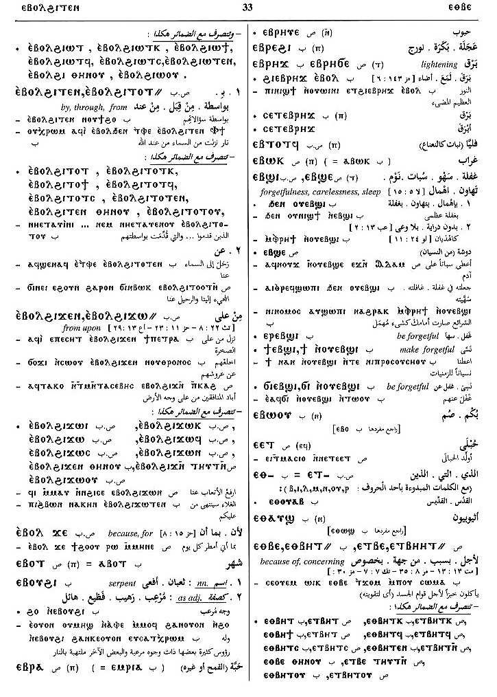

(noun male)
seed [σπερμα, σποροσ]
(S)
ⲉⲃⲣⲁ,
ⲃⲣⲁ,
ⲃⲣⲉ
(S, A) ⲃⲣⲉ
(B) ⲃⲣⲁⲓ, ⲙⲃⲣⲁⲓ, ⲉⲫⲣⲁⲓ, ⲉⲙⲣⲁⲓ
(F) ⲃⲣⲉⲉⲓ
(S) plural: ⲉⲃⲣⲏⲟⲩⲉ, ⲃⲣⲏⲩⲉ, ⲃⲣⲏⲏⲩⲉ
(S, A) ⲃⲣⲉ
(B) ⲃⲣⲁⲓ, ⲙⲃⲣⲁⲓ, ⲉⲫⲣⲁⲓ, ⲉⲙⲣⲁⲓ
(F) ⲃⲣⲉⲉⲓ
(S) plural: ⲉⲃⲣⲏⲟⲩⲉ, ⲃⲣⲏⲩⲉ, ⲃⲣⲏⲏⲩⲉ
| (S) ⲉⲃⲣⲁ ⲥⲱϣⲉ, ⲉⲃⲣⲓ ⲥⲱϣⲉ, ⲃⲣⲓ ⲥⲱϣⲉ, ⲉⲃⲣⲉ ⲥⲱϣⲉ (ⲧ) | (noun female)
seed-corn253 |
Crum: 53b | |||||||
See also:
| view | (S) ϭⲣⲟ(ⲟ)ϭ, ϭⲗⲟϭ (sA, F) ϭⲣⲁϭ (B) ϫⲣⲟϫ (S) plural: ϭⲣⲱ(ⲱ)ϭ, ⲕⲣⲱⲱϭ (S, F) plural: ϭⲣⲟⲟϭ (B) plural: ϫⲣⲱϫ (F) plural: ϭⲣⲱⲱϫ | (noun male) seed [σπερμα, σποροσ]112 |
| view | (S) ⲛⲁⲡⲣⲉ, ⲛⲁⲡⲛⲉ, ⲛⲉⲡⲣⲉ (B) ⲛⲁⲫⲣⲓ (F) ⲛⲉⲡⲣⲓ | (noun female) grain, seed [κοκκοσ]1195 |
| view | (B) ϥⲣⲉ | (noun male) seed2059 |
| view | (S, A, B) ⲁⲗ (F) ⲉⲗ | (noun male) pebble [ξηφοσ]
hail stone [χαλαζα] testicle spot, patch of skin, eruption seed420 |
Crum: 53

53
Dawoud: 25b,
33a-33b, 36b,
142a

25

33

36

142